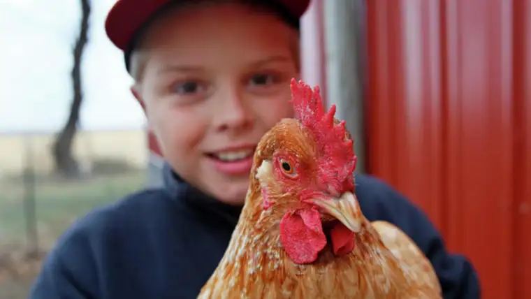

MOORHEAD — God’s grace — that’s the only way Jason and Lynn Kotrba can sufficiently describe how it all came to be.
Seven kids, after multiple miscarriages, followed by an ardent search for the perfect place to raise them — and finding it — has left them in awe.
“On a good night, you can see the Northern Lights where the Mary grotto is, and you should see the sunsets in the summertime, setting on top of the trees,” Jason says. “It’s really every little boy’s dream.”
And every girl’s too, he adds, recalling the group of sixth-grade girls who discovered the joy of playing in the mud. “They loved it. They talked about it for days with their parents, and they stunk because, well, mud’s stinky,” he chuckles.
Their home encompasses 13 acres of wooded property in an area thought to be a former path of the Red River, replete with rolling terrain and a creek bed, where cattails and chokecherry and gooseberry bushes intermix with oak trees, and “wild plum that tastes like sugar in the fall.”
It didn’t seem right to keep the gift to themselves, they say, so after praying and plotting, they’re making this place — which they share with chickens, and, soon, sheep and possibly pigs — the setting for a nonprofit for others to enjoy, and where they hope to help find a cure for Huntington’s Disease.
Lynn was only 13 when Huntington’s — a genetic disease that kills brain cells, leads to early death and has no cure — claimed her mother’s life.
“She was diagnosed when I was in 4th grade. I don’t remember her ever being well,” Lynn says.
The loss nudged her to secretly dream of becoming a doctor and discovering the cure for the disease, which also ended her sister Lisa’s life.
Instead, she went into counseling, and currently licenses foster homes for Lutheran Social Services.
But the dream of helping eradicate the disease never left.
“Now, we could potentially be a part of finding that cure,” Lynn says, explaining the providential discovery of Shepherd’s Gift, a nonprofit in South Dakota that raises sheep for Huntington’s Disease research.

Olivia Kotrba gathers eggs from the chicken coop at Harvest Hope Farm. David Samson / The Forum
Harvest Hope Farm, the Kotrbas’ recently-formed nonprofit, will be multi-purposeful, involving also a farm camp for children, ages 7 to 15, who will raise their own vegetables, interact with farm animals and commune with nature, starting in May.
The initial flock of sheep they’ll obtain in March through Shepherd’s Gift all will arrive pregnant, Lynn explains, giving the children a chance to help bottle-feed lambs and sheer sheep.
“We’re going to put collars on the sheep and let the kids walk them; they’re very docile,” Lynn says, noting the benefits for children dealing with emotional issues.
Kim Kangas, an animal scientist on the board, says her 17 years of working on sheep pregnancies should serve the project well. “I do think there’s some Holy Spirit working here, making sure things are gelling really nicely,” she says.
She’ll also educate visitors on the therapeutic benefits of animals, and other ways they enrich our lives, including through food.
“I’m amazed,” Lynn notes, “at how many kids have asked, ‘You get eggs from your chickens? Don’t they come from the store?'”

Joseph Kotrba sprints ahead of his siblings on a walk through the woods at Harvest Hope Farm. Dave Samson / The Forum
A faith component will involve spiritual retreats and other chances for reprieve. An outdoor “Rosary Walk,” installed by local student Matthew Fischer as part of his Eagle Scout project, will provide a special place to pray.
Lynn says she hopes Harvest Hope Farm will be visited by a diverse group of people, from kids who “want to just come out because they think it would be fun,” to those who might “benefit from being able to pet an animal, run around and play in the dirt.”
Though many needs still exist, including financial help to get the project fully off and running, the couple says by God’s hand, Harvest Hope Farm will become what it’s meant to.
For now, they’ll just keep stepping out in faith, like Jason does every morning to feed and water the chickens before heading to Holy Spirit Catholic School, where he serves as principal.
“It’s really a release for me. You should see the stars at 6 o’clock in the morning,” he says.
“I just want to be grateful and appreciative of what I have,” Jason adds. “I see this growing in me, and turning in me, to give God’s grace to others. I don’t know how it’s going to end up. I just know it’s the right thing to do. So, I’m going to live it and just trust.”
[For the sake of having a repository for my newspaper columns and articles, I reprint them here, with permission, a week after their run date. The preceding ran in The Forum newspaper on Nov. 25, 2017.]